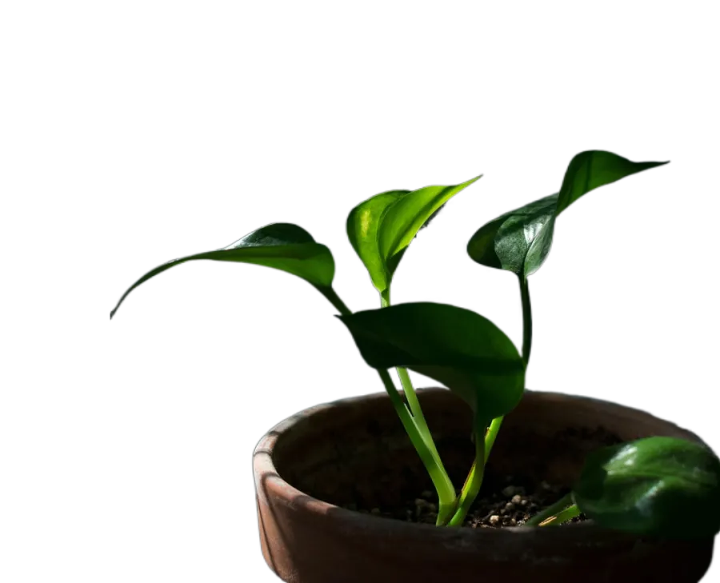
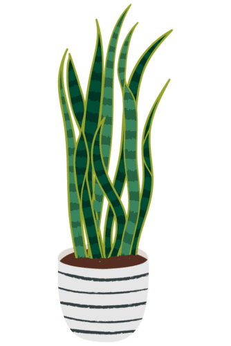
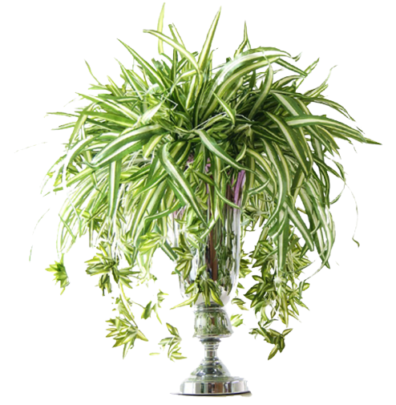
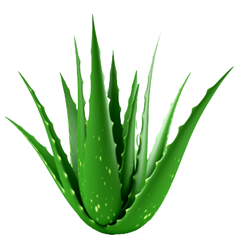
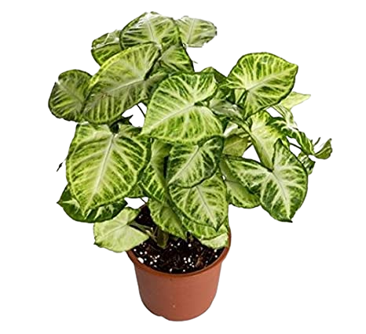

Not everyone has a green thumb when it comes to keeping plants thriving, but that’s alright because there are plenty of hard-to-kill houseplants out there that you can fill your rooms with. Don’t be fooled by their delicate appearance, they are more durable than you think; some can even withstand some serious neglect. So instead of trying to individually tend to each plant’s frequent watering schedules, we are sharing some of the best indoor plants that don’t require a ton of attention at all.

Golden Pothos
Calling all black thumbs: This trailing vine has earned the nickname "devil's ivy" for its ability to withstand nearly pitch-black conditions as well as under- and over-watering. In the wild, it is known to overgrow forest floors and tree trunks due to its aerial root system which can be used to help it grow vertically in the home up a coir pole. In good indoor conditions, you can expect the Pothos to trail to 10 feet long and grow leaves that are 3 feet in length if trained to climb! The Pothos is particularly fitting for indoor settings because it is able to filter gaseous toxins like formaldehyde from the air.

Snake Plant
One of many sansevierias, the snake plant is tough to kill. "Those can go for a month without water," says Nejman. The leaves are typically stiff, sharp, and spikey. Similar to other household succulents, snake plants help to filter indoor air. What's unique about this particular plant is that it's one of the few plants that can convert carbon dioxide (CO 2) into oxygen at night. This quality makes it an ideal plant for bedroom decor, since it can help regulate healthy airflow

Spider plant
What's better than one spider plant? Multiple spider plants. The fast-growing shoots produce little "babies" that you can re-pot for added greenery elsewhere. Just stick to well-lit spots, and don't forget weekly watering. You can place your spider plant in any room that gets some sunlight, but it shouldn't be placed in the full afternoon sun. An ideal place is somewhat close to a northern-facing window (southern-facing for you on the southern hemisphere). This is where the plant gets some (weaker) sunlight and it won't get too much.

Aloe Vera
Give it a good soak every week or two for optimal growth. It is critical that you place your aloe in a window where it will receive a minimum of six hours of sunlight per day. Without extended, direct light, your succulent will begin to stretch and lose its attractive, compact form. It may topple over as the stem grows weak.

Syngonium
This low-maintenance houseplant is interesting and versatile. It is available in a range of colors, and the attractive foliage changes in shape as the individual leaves change from juvenile to mature. The Syngonium is a popular trailing houseplant with attractive heart-shaped leaves. Also known as the Arrowhead, this sub-tropical plant is versatile and easy to care for, making it an ideal indoor plant at home or office